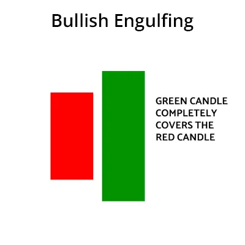
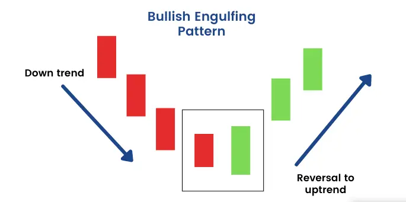
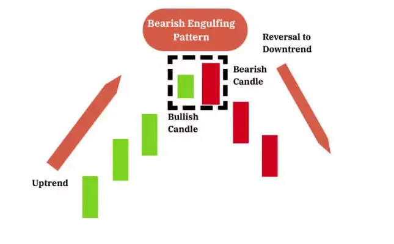
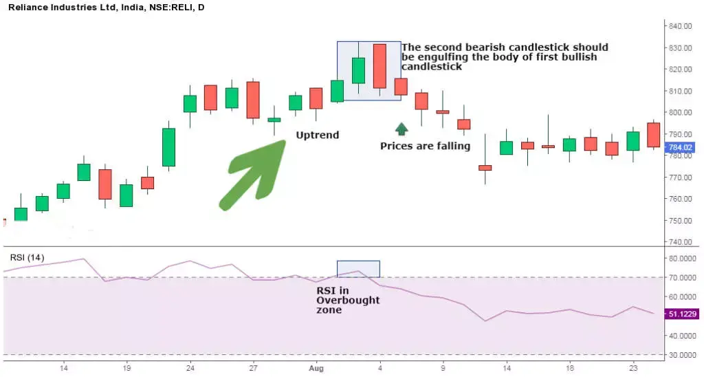

बुलिश इंगल्फिंग कैंडल संकेत एक डाउनट्रेंड के उलटने का संकेत देता है और जब यह डाउनट्रेंड के निचले स्तर पर प्रकट होता है तो खरीदारी दबाव में वृद्धि का संकेत देता है।
यह पैटर्न चल रहे ट्रेंड को उलट देता है क्योंकि अधिक से अधिक खरीदार मार्केट में शामिल होते हैं और उन्हें मूल्यों को आगे बढ़ाने के लिए ले जाते हैं।
इस पैटर्न में दो कैंडल होते हैं, दूसरा हरी कैंडल पहले लाल कैंडल के बॉडी को पूरी तरह से घेरता है।
| What Does the Bullish Engulfing Look Like? |

| Formation of Bullish Engulfing Patterns: |

| Trading Example: 1 |
यहां नीचे दिए गए चार्ट में दैनिक चार्ट के माध्यम से Bullish Engulfing pattern वाले ट्रेड करने का एक उदाहरण है। 